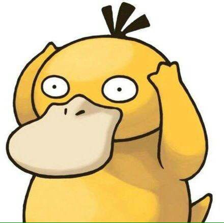

我是一个在感情方面腼腆的男生，在处世待人方面属于慢热型的男士。
所以就在昨天，我和亚斯娜一块聊如何恋爱这方面的话题。
我是一个不太懂的如何去和女孩子相处的男生，我感情这方面很笨蛋，不知道如何表达，只是想着对别人好应该是对的，但是这个观点现在在大家的眼里是不完全对的，他们都告诉我，爱是要去表达的。
下面是我和亚斯娜的聊天内容，我是在向他请教，向他请教怎么去追一个女孩子，怎么会恋爱，虽然每个人的观点不一样，但是我觉得我需要改变现在的自己。这个话题的开始时由工作方面展开的，本来他在杭州，说景美，然后有了美人以后，可以带着美人去欣赏美景，就这样，我开始了询问他怎么办：
他：杭州美景美女多
我：你都工作了 ， 还想着美景啊
他：双休啊 ， 没有美景和美女工作还有什么意义……
我：对 ， 得有美女和美景
他：是呀 ， 赚了钱，然后带着美女看美景花钱
我：你有女朋友吗 ？ 快教教我咋追女生的
他：没有女朋友 ，但是有几百个女生朋友……qq几千个女生

我：同 , 我大一的时候也是加好多女生， 但是到最后一个都没得到 ，现在也算是想通了，不可随随便便，要认真一些 ，就把一些不熟悉的女生都删除了
他：好吧 ，我是别人喜欢我的时候 ， 我就不喜欢她了
我：。。。滚滚滚
他：你对女生冷漠些 ， 她们就在意你一些
我：然后就能钓妹子了？ 真的假的 ， 得学学你
他：要表现的沉稳 ，装逼要适度 ，去打羽毛球 ，或者跳舞 ，玩一些女生会玩的东西 ， 陪女生玩
他：就是不能让别人看出来你在装逼 ，比如吧，我会说我羽毛球玩的还可以， 然后跟妹子去球馆打球， 两个人打就一直给妹子送球， 跟妹子打别人就带妹子一直赢
我：要向着她？
他：反正整个球馆除了教练都没人能打得过我(有些教练都打不过我) ，首先投其所好啊 ，然后一起玩
我：。。
他：要细心啊，比如出门带纸巾
我：我有点放不下自己 ， 觉得自己很了不起的感觉
他：就是要这样啊 ， 要在自己擅长的地方装逼 ，这样别人觉得那是你本事，不擅长的地方要规避，然后在擅长的地方谦虚
我：那我要怎么调整我的心态
他：当出现时机表演的时候，别人就会发现，卧槽好牛逼 。也不在乎那些你在乎的人就行了 。还有你越是想撩那个妹子，就越要控制自己不要撩的太频繁
我：这句我会记了很深刻 ，不要撩的太频繁
他：感情这事跟着感觉走更靠谱
我：对 ，还是要跟着感觉走
他：不在乎，蔑视她们 ， 就可以撩到了
我：你眼界很开阔啊， 我得学习， 晚点把你的讲话汇总一下， 把咱们的聊天记录上博客， 人生导师啊
他：卧槽 ， 别这样
我：真的可以
他：
我：一起努力(我在心里说的)